操作系统¶
2009年统考真题¶
请求分页管理系统中，假设某进程的页表内容如下表所示。
| 页号 | 页框 (Page Frame) 号 | 有效位 (存在位) |
|---|---|---|
| 0 | 101H | 1 |
| 1 | — | 0 |
| 2 | 254H | 1 |
页面大小为 4 KB，一次内存的访问时间是 100 ns，一次快表(TLB)的访问时间是 10 ns，处理一次缺页的平均时间为 10⁸ ns（已含更新 TLB 和页表的时间）。进程的驻留集大小固定为 2，采用最近最少使用（LRU）置换算法和局部淘汰策略。假设：
1. TLB 初始为空；
2. 地址转换时先访问 TLB，若 TLB 未命中，再访问页表（忽略访问页表后的 TLB 更新时间）；
3. 有效位为 0 表示页面不在内存，产生缺页中断，缺页中断处理后，返回到产生缺页中断的指令处重新执行。
设有虚地址访问序列 2362H、1565H、25A5H，请问：
1）依次访问上述三个虚拟地址，各需多少时间？给出计算过程。
2）基于上述访问序列，虚地址 1565H 的物理地址是多少？请说明理由。
三个进程 P1、P2、P3 互斥使用一个包含 N（N>0）个单元的缓冲区。
P1 每次用 produce() 生成一个正整数并用 put() 送入缓冲区某一空单元；
P2 用 getodd() 从该缓冲区中取出一个奇数并用 countodd() 统计奇数个数；
P3 每次用 geteven() 从该缓冲区中取出一个偶数并用 counteven() 统计偶数个数。
请用信号量机制实现这三个进程的同步与互斥活动，并说明所定义的信号量的含义（要求用伪代码描述）。
2010年统考真题¶
计算机系统采用 C-SCAN（循环扫描）磁盘调度策略，使用 2 KB 内存空间记录 16 384 个磁盘块的空闲状态。
1) 请说明在上述条件下如何进行磁盘块空闲状态的管理。
2) 某单面磁盘旋转速度 6 000 r/min，每磁道 100 扇区，相邻磁道平均移动时间 1 ms。磁头初始位于 100 号磁道，方向增大，磁道请求队列：50，90，30，120；每个磁道读 1 个随机扇区。求读完 4 个扇区所需总时间（给出计算过程）。
3) 若将磁盘替换为随机访问 Flash（SSD/U 盘），是否存在比 C-SCAN 更高效的磁盘调度策略？若有，给出策略名称并说明理由；若无，说明理由。
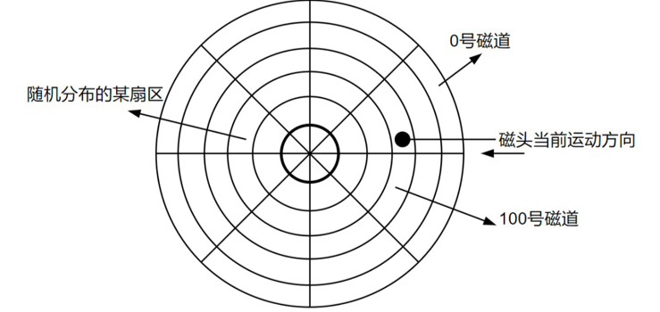
逻辑地址空间与物理地址空间均为 64 KB，按字节编址。某进程最多需要 6 页（Page）数据存储空间，页大小 1 KB，系统采用固定分配局部置换，已分配 4 个页框（PageFrame）。装入时刻 260 前的访问情况如下表：
| 页号 | 页框 (Page Frame) 号 | 装入时刻 | 访问位 |
|---|---|---|---|
| 0 | 7 | 130 | 1 |
| 1 | 4 | 230 | 1 |
| 2 | 2 | 200 | 1 |
| 3 | 9 | 160 | 1 |
当进程执行到时刻 260 时，访问逻辑地址 17CAH 的数据。
1) 求该逻辑地址对应的页号。
2) 若采用先进先出（FIFO）置换算法，求该逻辑地址对应的物理地址（给出计算过程）。
3) 若采用时钟（Clock）置换算法，且当前指针顺时针指向 2 号页框，求该逻辑地址对应的物理地址（给出计算过程）。
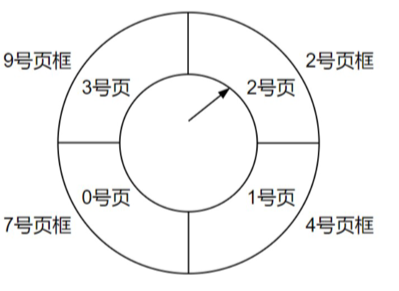
2011年统考真题¶
某计算机存储器按字节编址，虚拟地址空间大小为 16 MB，主存地址空间大小为 1 MB，页面大小为 4 KB；Cache 采用直接映射方式，共 8 行；主存与 Cache 之间交换的块大小为 32 B。系统运行到某一时刻，页表部分内容和 Cache 部分内容分别为十六进制形式。请回答：
1) 虚拟地址共几位，哪几位表示虚页号？物理地址共几位，哪几位表示页框号？
2) 使用物理地址访问 Cache 时，物理地址应划分成哪几个字段？说明每位数及位置。
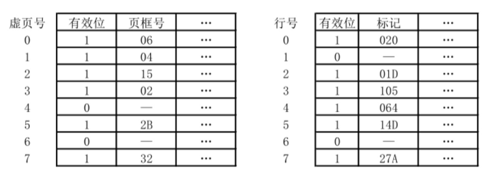
3) 虚拟地址 001C60H 所在页面是否在主存？若在，给出对应的物理地址，并判断是否 Cache 命中，说明理由。
4) 若配置四路组相联 TLB，共 8 项，当前内容如下所示，则虚拟地址 024BACH 所在页面是否在主存？说明理由。
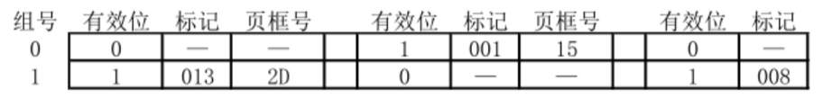
某银行提供 1 个服务窗口和 10 个等待座位。顾客到达时若有空座位则到取号机取号并等待；取号机一次只允许一人使用。营业员空闲时叫号服务。请添加必要的信号量及 P、V（或 wait、signal）操作，实现上述互斥与同步，说明信号量含义并赋初值。
| C++ | |
|---|---|
2012年统考真题¶
某请求分页系统页面置换策略：从 0 时刻开始，每 5 个时间单位扫描一次驻留集，未被访问的页框回收并放入空闲链尾，内容不清空。缺页时若该页曾在空闲链中则直接放回驻留集，否则从空闲链头取框。初始空闲页框号依次为 32、15、21、41。进程 P 的访问序列为：<1,1>，<3,2>，<0,4>，<0,6>，<1,11>，<0,13>，<2,14>。请回答： 1) 访问 <0,4> 时的页框号？
2) 访问 <1,11> 时的页框号？说明理由。
3) 访问 <2,14> 时的页框号？说明理由。
4) 该方法是否适合时间局部性好的程序？说明理由。
某文件系统最大容量 4 TB，以 1 KB 磁盘块为单位。文件控制块 FCB 含 512 B 索引表区。请回答： 1) 若索引表区仅用直接索引，索引项最少占多少字节？可支持的单个文件最大长度是多少字节？
2) 若索引表区结构：第 0~7 字节为 <起始块号 6 B，块数 2 B> 表示预分配连续空间，其余 504 B 为直接索引，每项 6 B，则单个文件最大长度是多少？为使长度最大，起始块号和块数字节数应如何调整并说明理由。
2013年统考真题¶
某博物馆最多容纳 500 人同时参观，出入口一次仅允许一人通过。请添加信号量及 P、V（或 wait、signal）操作实现互斥与同步，说明信号量含义并赋初值。
某计算机主存按字节编址，逻辑地址和物理地址均为 32 位，页表项 4 B。请回答： 1) 若使用一级页表，逻辑地址结构为
页号 20 位、页内偏移 12 位，则页大小是多少？页表最大占多少字节？
2) 若使用二级页表，逻辑地址结构为： 页目录号 10 位、页表索引 10 位、页内偏移 12 位，给出逻辑地址 LA 对应的页目录号和页表索引表达式。
3) 采用 (1) 的分页方式，某代码段起始逻辑地址 00008000H，长度 8 KB，装入物理地址 00900000H 起连续空间，页表连续存放在 00200000H 起，求代码段对应两页表项的物理地址、页框号及代码页面 2 的起始物理地址。
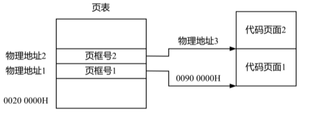
2014年统考真题¶
文件 F 由 200 条记录组成，编号从 1 开始。用户欲将内存中一条记录插入为第 30 条记录。请回答：
1) 若文件系统为连续分配，每块存 1 条记录，文件前后均有足够空闲空间，完成插入最少需访问多少磁盘块？FCB 内容如何变化？ 2) 3) 若文件系统为链接分配，每块存 1 条记录和 1 个链接指针，完成插入需访问多少磁盘块？若每块 1 KB，其中 4 B 存指针，则文件系统支持的文件最大长度是多少？
系统中有多个生产者、多个消费者共享容量 1000 的环形缓冲区（初始为空）。缓冲区未满时生产者放入产品，否则等待；未空时消费者取产品，否则等待。要求任一消费者一次连续取 10 件后其他消费者才可取。请用信号量 P、V（或 wait、signal）操作实现同步，说明信号量含义及初值。
2015年统考真题¶
有 A、B 两人通过信箱进行辩论，每个人都从自己的信箱中取得对方的问题，将答案和向对方提出的新问题组成一个邮件放入对方的邮箱中。
假设 A 的信箱最多放 M 个邮件，B 的信箱最多放 N 个邮件。初始时 A 的信箱中有 x 个邮件 (0 < x < M)，B 的信箱中有 y 个邮件 (0 < y < N)。辩论者每取出一个邮件，邮件数减 1。 A 和 B 两人的操作过程描述如下：
| C++ | |
|---|---|
当信箱不为空时，辩论者才能从信箱中取邮件，否则等待；当信箱不满时，辩论者才能将新邮件放入信箱，否则等待。 请添加必要的信号量和 P、V（或 wait、signal）操作，以实现上述过程的同步。要求写出完整的过程，并说明信号量的含义和初值。
某计算机按字节编址，采用二级页表，虚拟地址格式: 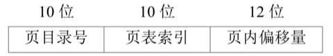
请回答：
1) 页及页框大小各多少字节？进程虚拟地址空间共多少页？
2) 页目录项和页表项均占 4 B，则页目录和页表共占多少页？给出计算过程。
3) 若某指令周期访问虚拟地址 01000000H 和 01112048H，地址转换时共访问多少个二级页表？说明理由。
2016年统考真题¶
某计算机采用页式虚拟存储管理方式，按字节编址，虚拟地址为32位，物理地址为24位，页大小为8KB；TLB采用全相联映射；Cache数据区大小为64KB，按2路组相联方式组织，主存块大小为64B。存储访问过程的示意图如下。
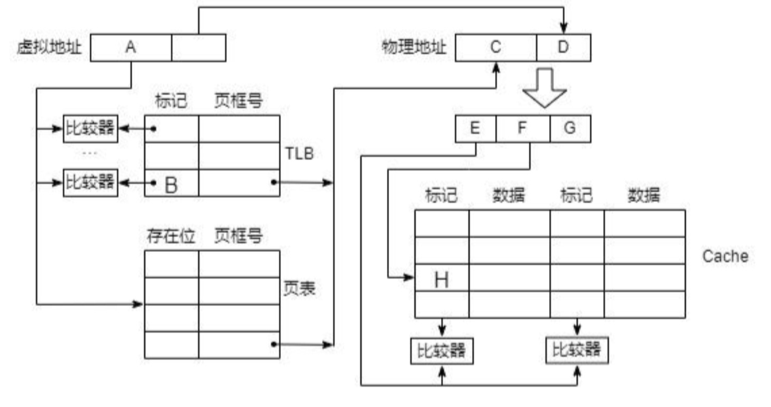
1) 图中字段A~G的位数各是多少？TLB标记字段B中存放的是什么信息？
2) 将块号为4099的主存块装入到Cache中时，所映射的Cache组号是多少？对应的H字段内容是什么？
3) Cache缺失处理的时间开销大还是缺页处理的时间开销大？为什么？
4) 为什么Cache可以采用直写(WriteThrough)策略，而修改页面内容时总是采用回写(WriteBack)策略？
某进程调度程序采用基于优先数(priority)的调度策略，即选择优先数最小的进程运行，进程创建时由用户指定一个nice作为静态优先数。为了动态调整优先数，引入运行时间cpuTime和等待时间waitTime，初值均为0。进程处于执行态时，cpuTime定时加1，且waitTime置0；进程处于就绪态时，cpuTime置0，waitTime定时加1。
1) 若调度程序只将nice的值作为进程的优先数，即priority=nice，则可能会出现饥饿现象，为什么？
2) 使用nice、cpuTime和waitTime设计一种动态优先数计算方法，以避免产生饥饿现象，并说明waitTime的作用。
2017年统考真题¶
Q1 已知 \(f(n)=\sum_{i=0}^{n}2^{i}=2^{n+1}-1=11\cdots\cdots1B\)，计算 \(f(n)\) 的 C 语言函数 \(f1\) 如下:
| C | |
|---|---|
将 \(fl\) 中的 \(int\) 都改为 \(float\)，可得到计算 \(f(n)\) 的另一个函数 \(f2\)。假设 \(unsigned\) 和 \(int\) 型数据都占 32 位，\(float\) 采用 IEEE 754 单精度标准。回答下列问题。
1) 当 \(n = 0\) 时，\(fl\) 会出现死循环，为什么? 若将 \(fl\) 中的变量 \(i\) 和 \(n\) 都定义为 \(int\) 型，则 \(fl\) 是否还会出现死循环? 为什么?
2) \(fl(23)\) 和 \(f2(23)\) 的返回值是否相等? 机器数各是什么(用十六进制表示)?
3) \(fl(24)\) 和 \(f2(24)\) 的返回值分别为 33554431 和 33554432.0，为什么不相等?
4) \(f(31)=2^{32}-1\) 而 \(fl(31)\) 的返回值却为 -1，为什么? 若使 \(fl(n)\) 的返回值与 \(f(n)\) 相等，则最大的 \(n\) 是多少?
5) \(f2(127)\) 的机器数为 7F800000H，对应的值是什么? 若使 \(f2(n)\) 的结果不溢出，则最大的 \(n\) 是多少? 若使 \(f2(n)\) 的结果精确(无舍入)，则最大的 \(n\) 是多少?
Q2 在按字节编址的计算机 \(M\) 上，题 43 中 \(f1\) 的部分源程序(阴影部分)与对应的机器级代码(包括指令的虚拟地址)如下图所示。
其中，机器级代码行包括行号、虚拟地址、机器指令和汇编指令。请回答下列问题。
1) 计算机 \(M\) 是 RISC 还是 CISC? 为什么?
2) \(f1\) 的机器指令代码共占多少字节? 要求给出计算过程。
3) 第 20 条指令 \(cmp\) 通过 \(i\) 减 \(n - 1\) 实现对 \(i\) 和 \(n - 1\) 的比较。执行 \(f1(0)\) 过程中，当 \(i = 0\) 时，\(cmp\) 指令执行后，进/借位标志 \(CF\) 的内容是什么? 要求给出计算过程。
4) 第 23 条指令 \(shl\) 通过左移操作实现了 \(power * 2\) 运算，在 \(f2\) 中能否也用 \(shl\) 指令实现 \(power * 2\)? 为什么?
某计算机采用二级分页虚拟存储管理方式，虚拟地址格式如下：
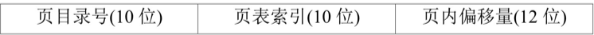
针对第一题中的函数f1和第二题中的机器指令代码,回答如下问题
1) 函数f1的机器指令代码占多少页？
2) 取第1条指令(push ebp)时，若进行地址变换过程中需要访问内存中的页目录和页表，则会分别访问它们各自的第几个表项？
3) 该机的I/O采用中断控制方式。若进程P在调用f1之前通过scanf()获取n的值，则在执行scanf()的过程中，进程P的状态会如何变化？CPU是否会进入内核态
某进程中有3个并发执行的线程thread1、thread2和thread3，其伪代码如下所示。请添加必要的信号量和P、V（或wait、signal）操作，确保线程互斥访问临界资源，并且最大限度地并发执行。
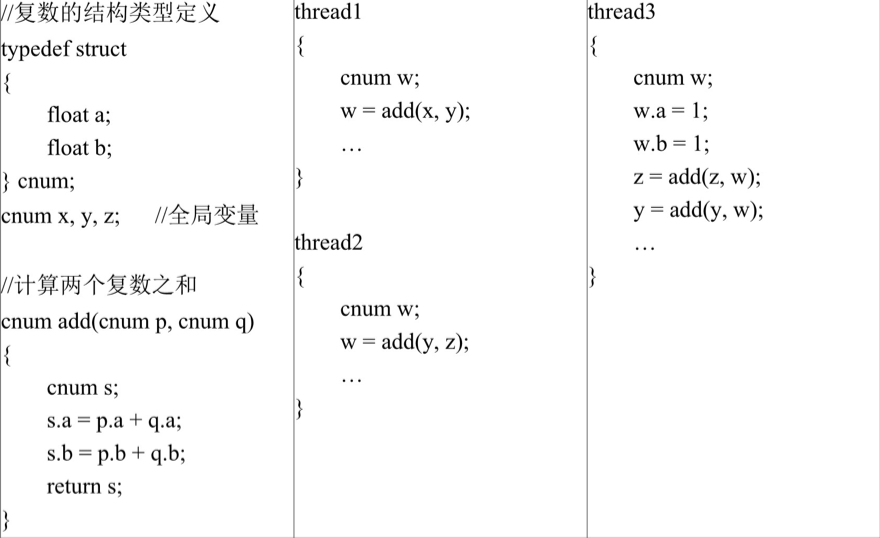
2018年统考真题¶
某计算机采用页式虚拟存储管理方式，按字节编址。CPU 进行存储访问的过程如题 44 图所示。根据下图回答下列问题。
1) 主存物理地址占多少位?
2) TLB 采用什么映射方式?TLB 是用 SRAM 还是用 DRAM 实现
3) Cache 采用什么映射方式?若 Cache 采用 LRU 替换算法和回写(Write Back)策略，则 Cache 每行中除数据(Data)、Tag 和有效位外，还应有哪些附加位? Cache 的总容量是多少? Cache 中有效位的作用是什么?
4) 若 CPU 给出的虚拟地址为 0008C040H，则对应的物理地址是多少?是否在 Cache 中命中?说明理由。若 CPU 给出的虚拟地址为 0007C260H，则该地址所在主存块映射到的 Cache 组号是多少?请结合图片内容
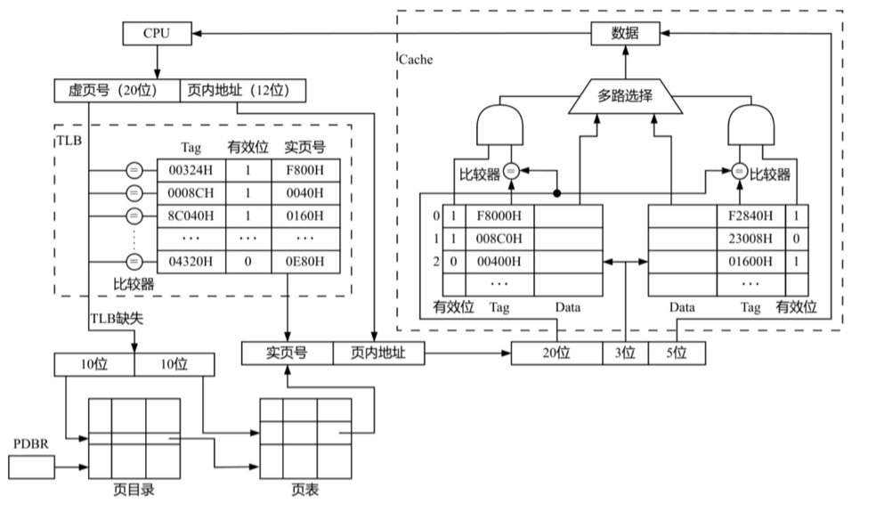
根据上题给出的虚拟存储管理方式,回答下列问题
1) 某虚拟地址对应的页目录号为6，在相应页表中页号为6，页内偏移量为8，该虚拟地址的十六进制表示是什么？
2) 寄存器PDBR用于保存当前进程的页目录起始地址，该地址是物理地址还是虚拟地址？进程切换时，PDBR的内容是否会变化？说明理由。同一进程的线程切换时，PDBR的内容是否会变化？说明理由。
3) 为支持改进型CLOCK置换算法，页表项中需设置哪些字段？
某文件系统采用索引节点存放文件属性和地址信息，簇大小为4KB。每个文件索引节点占64B，有11个地址项，其中直接地址项8个，一级、二级和三级间接地址项各1个，每个地址项长度为4B。
1) 该文件系统能支持的最大文件长度是多少？（给出计算表达式即可）
2) 文件系统用1 M(=2^20)个簇存放文件索引节点，用512 M个簇存放文件数据。若一个图像文件大小为5600 B，则该文件系统最多能存放多少个图像文件？
3) 若文件F1大小为6 KB，文件F2大小为40 KB，则获取F1和F2最后一个簇的簇号所需时间是否相同？为什么？
2019年统考真题¶
有n(n≥3)位哲学家围坐在圆桌边，每位哲学家交替就餐和思考。圆桌中心有m(m≥1)个碗，每两位哲学家之间有一根筷子。每位哲学家必须取到一个碗和左右两侧筷子后才能就餐，进餐完毕将碗和筷子放回原位并继续思考。为使尽可能多的哲学家同时就餐且防止死锁，请使用信号量的P、V操作描述互斥与同步，并说明所用信号量及初值含义
某计算机系统磁盘有300个柱面，每柱面10个磁道，每磁道200个扇区，扇区大小512 B。文件系统每簇含2个扇区。
1) 磁盘容量是多少？
2) 磁头当前位于85号柱面，收到4个访问请求，簇号分别为100260、60005、101660、110560。若采用最短寻道时间优先(SSTF)算法，访问簇的先后次序是什么？
3) 第100530簇在磁盘上的物理地址是什么？将簇号转换成物理地址的过程由I/O系统的什么程序完成？
2020年统考真题¶
现有5个操作A、B、C、D和E，操作C必须在A和B完成后执行，操作E必须在C和D完成后执行。请使用信号量的wait、signal操作描述上述操作之间同步关系，并说明所用信号量及其初值
某32位系统采用基于二级页表的请求分页存储管理方式，按字节编址，页目录项和页表项长度均为4字节，虚拟地址结构如下：
某C程序中数组 \(A[1024][1024]\) 的起始虚拟地址为10800000H，元素占4字节，运行时进程页目录起始物理地址为00201000H。
1) 数组元素a1的虚拟地址是什么？对应的页目录号和页号分别是什么？对应的页目录项物理地址是什么？若该目录项页框号为00301H，则a1所在页对应的页表项物理地址是什么？
2) 数组a在虚拟地址空间中所占区域是否必须连续？在物理地址空间中所占区域是否必须连续？
3) 已知数组a按行优先存放，若对数组a分别按行遍历和按列遍历，哪一种遍历方式的局部性更好
2021年统考真题¶
下表给出了整型信号量S的wait()和signal()操作的功能描述，以及采用开/关中断指令实现信号量操作互斥的两种方法。
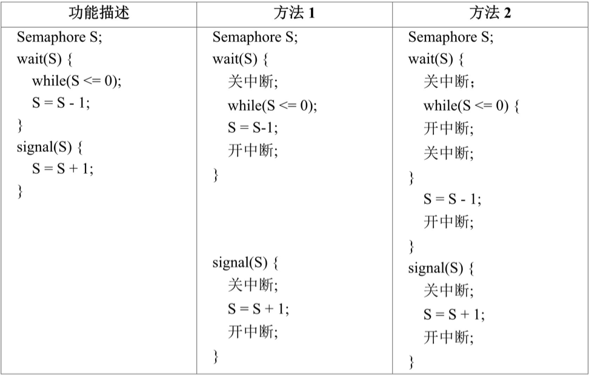
请回答下列问题：
1) 为什么在wait()和signal()操作中对信号量S的访问必须互斥执行？
2) 分别说明方法1和方法2是否正确。若不正确，请说明理由。
3) 用户程序能否使用开/关中断指令实现临界区互斥？为什么？
某计算机用硬盘作为启动盘，硬盘第一个扇区存放主引导记录，其中包含磁盘引导程序和分区表。磁盘引导程序用于选择要引导哪个分区的操作系统，分区表记录硬盘上各分区的位置等描述信息。硬盘被划分成若干个分区，每个分区的第一个扇区存放分区引导程序，用于引导该分区中的操作系统。系统采用多阶段引导方式，除了执行磁盘引导程序和分区引导程序外，还需要执行ROM中的引导程序。请回答下列问题：
1) 系统启动过程中操作系统的初始化程序、分区引导程序、ROM中的引导程序、磁盘引导程序的执行顺序是什么？
2) 把硬盘制作为启动盘时，需要完成操作系统的安装、磁盘的物理格式化、逻辑格式化、对磁盘进行分区，执行这4个操作的正确顺序是什么？
3) 磁盘扇区的划分和文件系统根目录的建立分别是在第(2)问的哪个操作中完成的？
2022年统考真题¶
某文件系统的磁盘块大小为4KB，目录项由文件名和索引结点号构成，每个索引结点占256字节，其中包含直接地址项10个，一级、二级和三级间接地址项各1个，每个地址项占4字节。该文件系统中子目录stu的结构如题图所示，stu包含子目录course和文件doc，course子目录包含文件course1和course2。各文件的文件名、索引结点号、占用磁盘块的块号如题图所示。请回答下列问题：
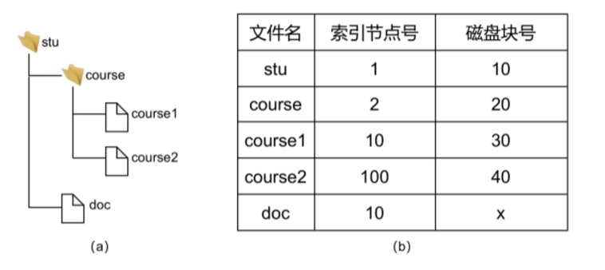
1) 目录文件stu中每个目录项的内容是什么？
2) 文件doc占用的磁盘块的块号x的值是多少？
3) 若目录文件course的内容已在内存，则打开文件course1并将其读入内存，需要读几个磁盘块？说明理由。
4) 若文件course2的大小增长到6MB，则为了存取course2需要使用该文件索引结点的哪几级间接地址项？说明理由。
某进程的两个线程T1和T2并发执行A、B、C、D、E和F共6个操作，其中T1执行A、E和F，T2执行B、C和D。题图表示上述6个操作的执行顺序所必须满足的约束：C在A和B完成后执行，D和E在C完成后执行，F在E完成后执行。请使用信号量的wait()、signal()操作描述T1和T2之间的同步关系，并说明所用信号量的作用及其初值。
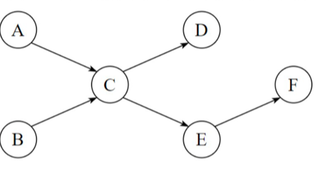
2023年统考真题¶
现要求学生使用swap指令和布尔型变量lock实现临界区互斥。lock为线程间共享的变量，lock的值为TRUE时，线程不能进入临界区；为FALSE时，线程能进入临界区。某同学编写的实现临界区互斥的伪代码如下图所示：
| C++ | |
|---|---|
1) 某同学编写的伪代码中哪些语句存在错误？在不增加语句条数的情况下，将其改为正确的语句。
2) 是否可以用函数调用语句“newSwap(&key,&lock)”代替指令“swap(key,lock)”，以实现临界区的互斥？为什么？
进程P通过执行系统调用从键盘接收一个字符的输入，已知此过程中与进程P相关的操作包括：①将进程P插入就绪队列；②将进程P插入阻塞队列；③将字符从键盘控制器读入系统缓冲区；④启动键盘中断处理程序；⑤进程P从系统调用返回；⑥用户在键盘上输入字符。以上编号①~⑥仅用于标记操作，与操作的先后顺序无关。请回答下列问题：
1) 按照正确的操作顺序，操作①的前一个和后一个操作分别是上述操作中的哪一个？操作③的后一个操作是上述操作中的哪一个？
2) 在上述哪个操作之后CPU一定从进程P切换到其他进程？在上述哪个操作之后CPU调度程序才能选中进程P执行？
3) 完成上述哪个操作的代码属于键盘驱动程序？
4) 键盘中断处理程序执行时，进程P处于什么状态？CPU是处于内核态还是处于用户态？
2024年统考真题¶
某计算机按字节编址，采用页式虚拟存储管理方式，虚拟地址和物理地址的长度均为32位，页表项的大小为4字节，页大小为4MB，虚拟地址结构如下。
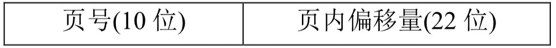
进程P的页表起始虚拟地址为B8C00000H，被装载到从物理地址65400000H开始的连续主存空间中。请回答下列问题，要求答案用十六进制表示。
1) 若CPU在执行进程P的过程中，访问虚拟地址12345678H时发生了缺页异常，经过缺页异常处理和MMU地址转换后得到的物理地址是BAB45678H，在此次缺页异常处理过程中，需要为所缺页分配页框并更新相应的页表项，则该页表项的虚拟地址和物理地址分别是什么？该页表项中的页框号更新后的值是什么？
2) 进程P的页表所在页的页号是什么？该页对应的页表项的虚拟地址是什么？该页表项中的页框号是什么？
计算机系统中的进程之间往往需要相互协作以完成一个任务。在某网络系统中，缓冲区B用于存放一个数据分组，对B的操作有C1、C2和C3，C1将一个数据分组写入B中，C2从B中读出一个数据分组，C3对B中的数据分组进行修改。要求B为空时才能执行C1，B非空时才能执行C2和C3。请回答下列问题：
1) 假设进程P1和P2均需要执行C1，实现C1的代码是否为临界区？为什么？
2) 假设B初始为空，进程P1执行一次C1，进程P2执行一次C2。请定义尽可能少的信号量，并用wait()、signal()操作描述进程P1和P2之间的同步或互斥关系，说明所用信号量的作用及其初值。
3) 假设B初始不为空，进程P1和P2各自执行一次C3。请定义尽可能少的信号量，并用wait()、signal()操作描述进程P1和P2之间的同步或互斥关系，说明所用信号量的作用及其初值。